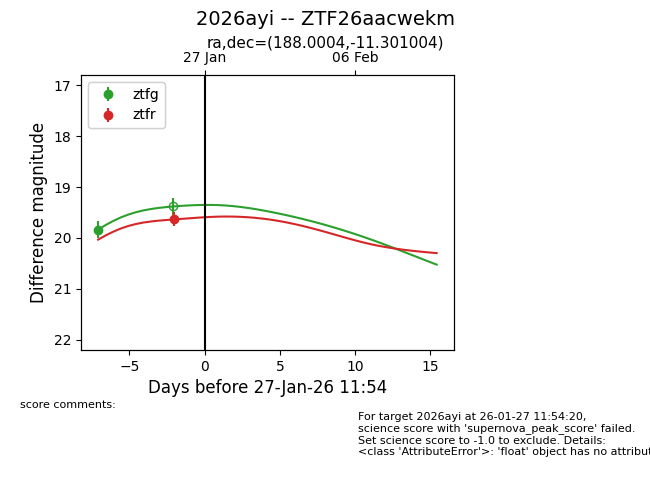
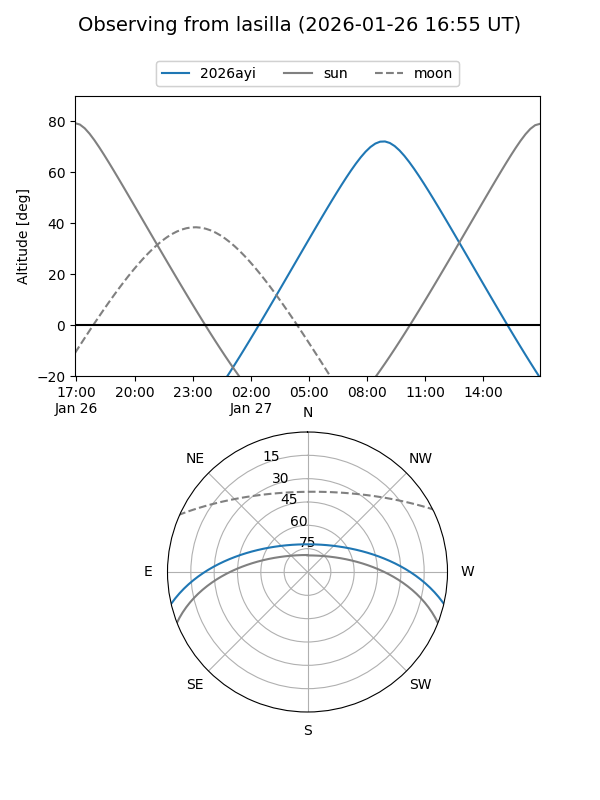
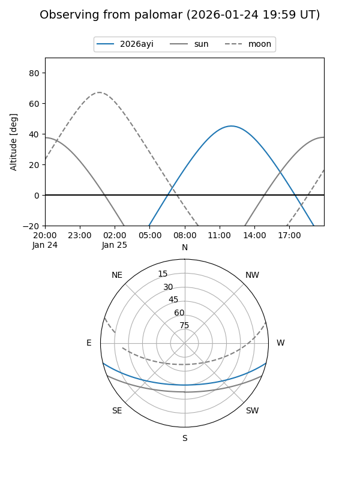
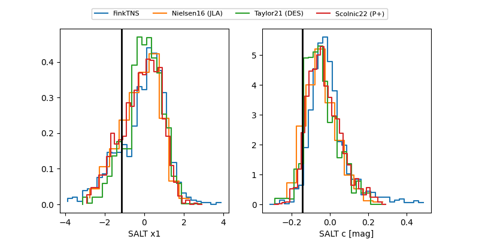

2026ayi
Target 2026ayi at 2026-01-27 11:56
Aliases and brokers:
FINK: link
Lasair: link
ALeRCE: link
TNS: link
YSE: link
alt names
ZTF26aacwekm (ztf,fink_ztf)
2026ayi (tns,yse)
Coordinates:
equatorial (ra, dec) = 188.0004,-11.30100
equatorial (HMS+DMS) = 12:32:00.09,-11:18:03.61
galactic (l, b) = (295.3005,+51.28252)
Flags:
Photometry:
last ztfg=19.84, ztfr=19.64
1 ztfg, 1 ztfr detections
Lightcurve

Visibility


Additional plots
